AIOps with IBM Z and LinuxONE¶
IBM Cloud Pak for AIOps¶
Introduce an Error into your Sample Application¶
In the following section, you will be using IBM Cloud Pak for AIOps to solve an issue in the NodeJS and Postgresql sample application running in your userNN-project OpenShift namespace. In this section, you will introduce an error that you will solve later in the lab.
-
In the OpenShift console, under the developer perspective, navigate to your userNN-project namespace topology (1), click the Postgresql icon (2), and then click the postgresql-userNN deployment hyperlink (3).
Tip
You may still have your OpenShift Web Console tab open from the Instana or Turbonomic labs. If not, you can find the URL again on the Environment Access page.

-
Under the Environment tab (1), change the value for POSTGRESQL_DATABASE from my_data to my_data-error (2). Click save at the bottom of the page.

Your NodeJS pod will shortly become unready as it is no longer able to find the correct Postgresql database. If at first it is still available, you likely need to wait a few more seconds.
-
Try to access the frontend application with the small hyperlink button (1) on the NodeJS icon.

You should receive an error page similar to the following:

Once you see this error message, proceed to the next section.
Overview of IBM Cloud Pak for AIOps¶
IBM Cloud Pak for AIOps is a platform that deploys advanced, explainable AI using your organization's data so that you can confidently assess, diagnose, and resolve incidents across mission-critical workloads and proactively avoid incidents and accerlate your time to resolution.
IBM Cloud Pak for AIOps helps you uncover hidden insights from multiple sources of data, such as logs, metrics, and events. It then delivers those insights directly into the tools that your teams already use, such as Slack or Microsoft Teams, in near real-time.
Exploring the CP4AIOps Console¶
-
Navigate to your IBM Cloud Pak for AIOps dashboard at https://cpd-cp4aiops.apps.x2pn.dmz/zen/#/homepage.
Select OpenShift Authentication from the Log in with dropdown, then click the blue Log in button.

-
If presented with two choices in a Log in with box, as shown below, select the
ldap-ats-wscdmz-wfwsldapcl01option, and log in with your usual lab credentials (i.e. userNN).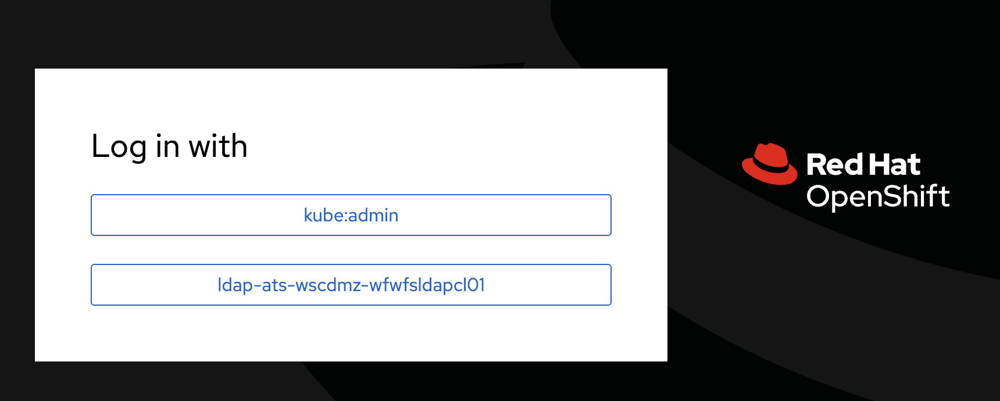
You may be prompted to authorize access to a service account in the cp4aiops project. Select Allow selected permissions if prompted.
While navigating the CP4AIOps platform, you might be prompted to take a tour of certain features. Select "Maybe Later" - you can come back to these tours later if you wish by clicking the "Tours" button in the top-right of the page.
After successful login, and dismissing any offers to take a tour, you should be at your CP4AIOps home page, which should look like this:

When you first open CP4AIOps, you are taken to the homepage that displays the most important information that you have access to. Depending on your credentials, different "widgets" will appear for you to see and act on.
The terms and concepts on this homepage may seem foreign at first, but they will become clear throughout the rest of this tutorial. A good place to start is on the AIOps Insights page where you can see an overview of the CP4AIOps benefits.
AIOps Insights¶
-
Navigate to Operate->AIOps Insights from the left-side menu. It may be necessary to click the "hamburger-menu" button in the top-left corner of the page to bring the left-side menu into view.
You should reach a page similar to this:

On this page, you see visualizations of two of the main goals of CP4AIOps - improving problem resolution time (Mean Time to Restore) and reducing the "signal-to-noise ratio" from all of the monitoring data produced within your enterprise IT environment (Reduction of Noise).
Mean Time to Restore (MTTR) (click to expand)
The total time period from the start of a failure to resolution. For business-critical applications, downtime of just a few minutes can mean thousands or millions of dollars' worth of lost revenue. IBM Cloud Pak for AIOps reduces MTTR by using AI-driven insights to recommend actions and runbooks to solve the issue more quickly.
Noise Reduction (click to expand)
The concept of reducing the number of IT events and alerts that your operations staff must evaluate, speeding recovery time and reducing employee fatigue.
In the image above, over 300,000 events were narrowed down to 10,000 alerts, which were further narrowed down to 431 incidents. These incidents are what IT Operations staff needs to evaluate and remediate either through manual processes, or by building automation for repeating incidents.
Next, you will take a look at where all of these events are coming from.
Integrations¶
-
From the left-side menu, navigate to Define -> Integrations.
You should see a page like this:
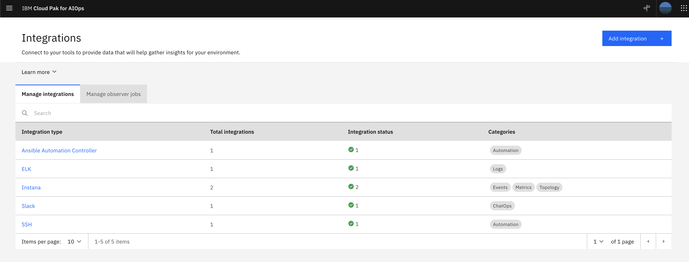
- All the data, events, and metrics you see in CP4AIOps are coming from the Instana server you explored earlier in this tutorial.
- Logs from select OpenShift applications are being forwarded to an ELK server which is then ingested by CP4AIOps.
- Slack is used for ChatOps to notify operations teams about incidents and ongoing remediation work.
There are also two outbound connections - one for SSH connections, and one to an Ansible Automation Platform server. These are both used to take remediation actions against target environments.
Note
Don't worry if some of these integrations indicate an error. The SSH and Ansible connections will show an error even though they are working- this appears to be caused by the permissions granted to your userNN roles in Cloud Pak for AIOps. This does not adversely impact your lab.
Regarding the error shown for the Instana integrations, this is caused by a recent problem that has very minimal impact on the lab that the instructors will debug and resolve later.
Resource Management¶
-
From the left-side menu, navigate to Operate -> Resource Management.
You should see a screen similar to what is shown below:

Similar to Turbonomic, CP4AIOps has integrated the Instana Application Perspectives.
-
Search for and click the link for the robot-shop application.
You will see a page like this:
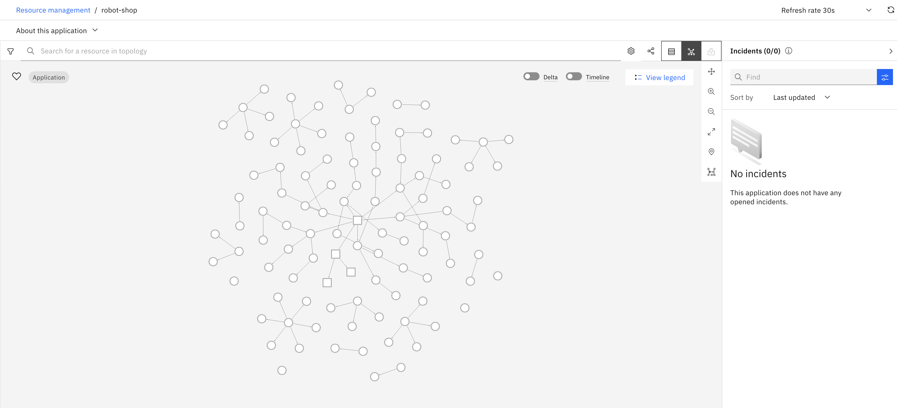
You now have a scoped view of just the resources associated with the Robot Shop Microservices Application - not only all of the Kubernetes objects such as pods, services, and routes, but also the individual application components within the containers such as
.jarfiles and even the API calls made to each endpoint.You can zoom in on the topology to better see the individual application components and relationships.
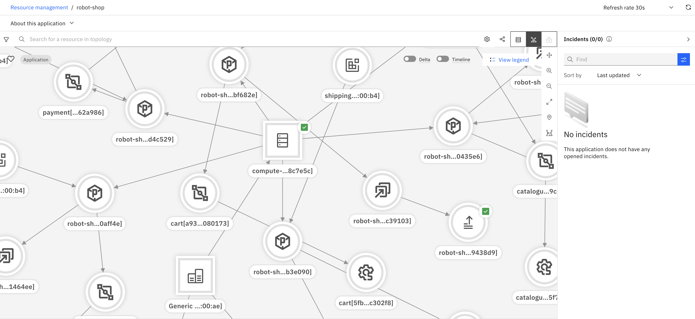
Automations¶
-
From the left-side menu, navigate to Operate -> Automations. If there are any filters applied, you can clear them by clicking the filter button and unchecking any that are applied.

The automation tools - policies, runbooks, and actions - help you resolve incidents quickly by setting up and enabling an automatic response as situations arise.
Policies are rules that contain condition and action sets. They can be triggered to automatically promote events to alerts, reduce noise by grouping alerts into an incident, and assign runbooks to remediate alerts.
-
For example, find the policy named robot shop promote alert to incident, and click it. In the new page that opens, click the Specification tab.
Tip
Use the search bar to quickly find the robot shop promote alert to incident policy
This policy looks for alerts that match the tags
Value of:alert.summarycontainsPOST /pay/{id} - Erroneous call rate is too high. An alert matching this tag will be sent from Instana when Instana determines there has been a significant increase in the rate of erroneous calls to the Robot Shop application.The policy also states what should happen when the policy finds a matching alert. In this case, it will promote the alert to an incident that will notify specific users responsible for fixing the issue, or potentially automatically run a runbook made up of one or more actions that have been defined in CP4AIOps.
-
Navigate to the Runbooks tab on the Automations page.
You should see a page like this:

Runbooks automate procedures, thereby increasing the efficiency of IT operations processes. Runbooks are made up of one or more actions that can be taken against a target environment through either ssh or HTTP calls.
You can also switch to the Activities tab under the Runbooks tab to see all of the previous runbook usage.
-
Navigate to the Actions tab on the Automations page.
Actions in runbooks are the collection of manual steps grouped into a single automated entity. An action improves runbook efficiency by automatically performing procedures and operations.
-
For example, click the Fix load deployment environment variable action (1) and then click the Content tab (2) of the new window that pops up.

This action enables CP4AIOps to ssh to a target server and run the proper oc (OpenShift CLI) commands to solve the issue.
There are other alternatives to ssh - for example, HTTP API calls or Ansible automation playbooks.
Runbooks and actions can be associated with incidents so that whenever an incident is created that meets certain criteria, a runbook can automatically kick off problem remediation.
Incidents and Alerts¶
-
In the left-side menu, navigate to Operate -> Incidents.
You'll get a page like this:
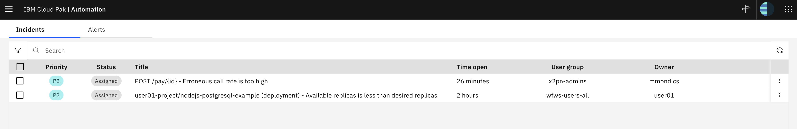
Depending on what alerts are triggered at the time you go through this lab, the current incidents will look different.
Incidents are where the IT operators and administrators should focus their attention to either manually close incidents as they are generated or build actions and runbooks in order to remediate incidents automatically as they appear.
-
Find the incident that begins with userNN-project/nodejs-userNN, where userNN is your user number.
Caution
Please be careful to select your correct incident. There is nothing stopping you from accidentally selecting another user's incident and closing it in the coming steps.
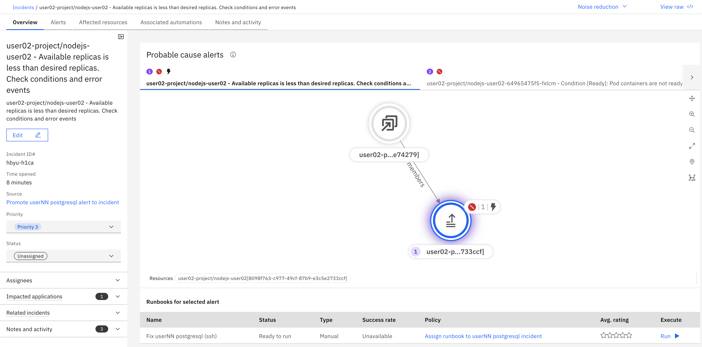
The incident contains many pieces of information that can be used to more quickly remediate issues.
- Probable cause alerts - CP4AIOps attempts to derive the root fault component, and the full scope of components that are affected by an incident
- Topology - provides a view of the affected components so IT Operators can see the incident in context. Note: the Topology for this application is not available at this time due to a recent problem. The instructors have not had a chance to debug this yet. You will not see the topology of this event as a result. It should have looked similar to what is in the above screenshot.
- Assignees - you can either manually assign incidents to team members to resolve, or CP4AIOps can assign people or teams automatically if a policy is configured to do so
- Impacted Applications - any business applications that CP4AIOps identifies as impacted by the incident
- Recommended runbooks - if CP4AIOps correlates the incident with others from the past that were resolved with certain playbooks, they will be recommended
-
There seems to be a problem with the NodeJS and Postgresql application running in your
userNN-projectOpenShift project.In your OpenShift web console, in the topology view of your userNN-project within the Developer perspective, try to access the frontend application with the small hyperlink button (1) on the NodeJS icon.
You should receive an error page similar to the following:
Cloud Pak for AIOps has identified this error as an incident, and has provided a runbook to fix it.
-
Back in the CP4AIOps incident near the bottom of the page, click the Run button (1) associated with the Fix userNN postgresql (ssh) runbook.
Tip
You may need to scroll down within the incident to find the runbook associated with the incident.
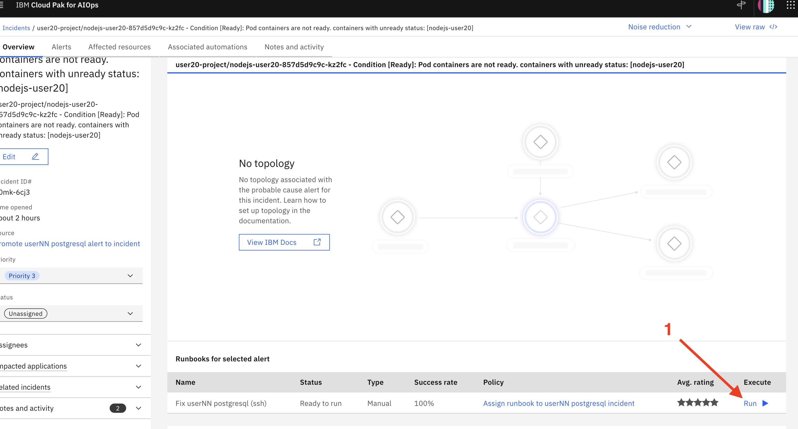
After clicking the Run button you should see a page like this:
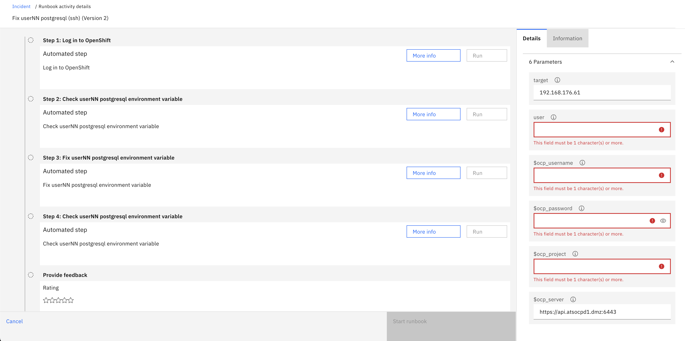
This runbook is made up of four separate actions. Each action is a bash command issued through an SSH connection. It is not required that all commands be of the same type. For example, one step could be a bash command while the second could be an Ansible playbook or an API call.
- First, the runbook will log into the OpenShift cluster from an Ubuntu server via an SSH connection.
- Second, it will check if the POSTGRESQL_DATABASE environment variable is properly set.
- Third, it will remediate the error. The remediation for this error is to edit the Postgresql deployment's environment variable to the correct database name of my_data, rather than my_data-error.
- Finally, it will check the environment variable again to confirm that it was properly changed.
-
Prior to running the actions, begin by entering four parameter values in the Details pane on the right- those for user, ocp_username, ocp_password, and ocp_project.
- user:
userNN(whereNNis your user number, same asocp_username) - ocp_username:
userNN(whereNNis your user number, same asuser) - ocp_password: your OpenShift password found on the Environment Access page (the same one you've been using throughout the labs).
- ocp_project:
userNN-project
Note
There are six parameters being passed to the runbook, but two of them have been pre-filled for you and should not be changed.
Your screen should look like this after you have filled in the parameter values.

- user:
-
After populating the variables, click Start Runbook at the bottom of the page.
At thus point the Run button for the first step in the runbook will be enabled.
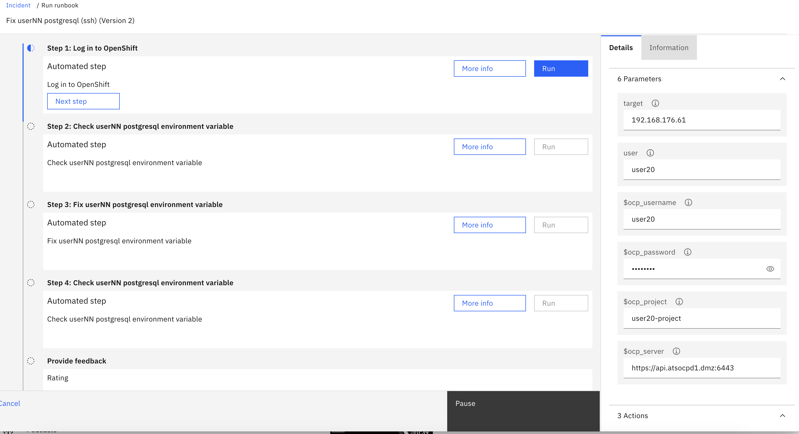
-
Click the Run button for Step 1: Log in to OpenShift to start the first action in the runbook.
Wait for Step 1 to complete. Your screen should look similar to this:

-
Click the Next step button in order to enable the Run button for Step 2: Check userNN postgresql environment variable.
-
Click through each step in the runbook, waiting for each step to show as completed before moving on..
If the output of step 4 includes the response POSTGRESQL_DATABASE=my_data, like in the screen shot below, then the application issue should be fixed.

Since it is the last step in the Runbook, at the end of Step 4: Check userNN postgresql environment variable, you will have a Complete button to click instead of a Next Step button.
You can give the runbook a 1-5 star rating, leave a comment, and mark that it worked. This will provide feedback to the automation engineers and AI algorithms so that runbooks can continue to improve.
-
In the OpenShift console, navigate back to your userNN-project in the developer view. Access your frontend application by clicking the hyperlink button attached to the NodeJS application.

Because the NodeJS application can now reach the Postgresql database, the application is accessible and you can enter fruit quantities into the inventory database using the webpage. Feel free to take a moment or two to tinker with this sample application as a reward for making it this far in the lab!
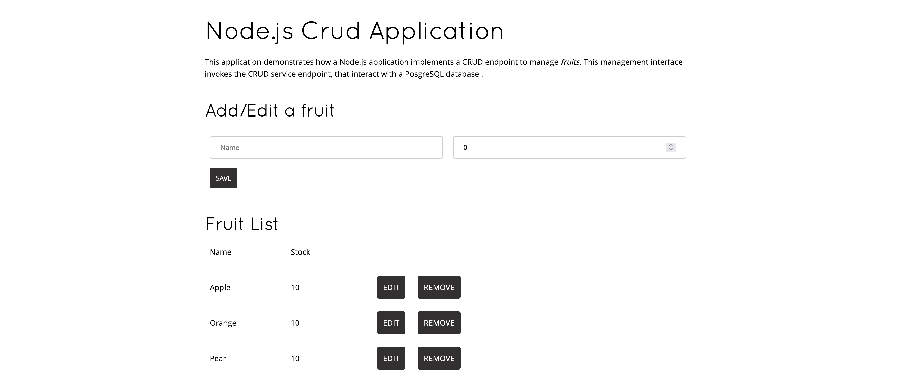
As you interact with the application, you will be able to see the resulting calls and traces in the
userNN-projectInstana application perspective. You should also see that 200 status calls have returned.

In CP4AIOps, you can either manually mark your incident as resolved, or you can let CP4AIOps identify that the error has been fixed and it will close the incident automatically.
AI Model Management¶
Throughout this tutorial, you have been interacting with alerts, incidents, and policies that have been generated or influenced by AI algorithms that are running and training in CP4AIOps This section will show you the AI models that come pre-loaded with CP4AIOps and the benefits they provide.
-
From the left-side menu, navigate to Operate -> AI Model Management.
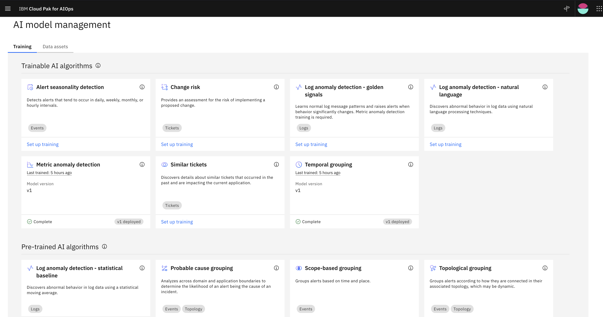
This page allows you to train the pre-loaded AI models to hone their ability to derive insights from your incoming data connections (Instana in this tutorial).
For example, the Temporal grouping AI model groups alerts which co-occur over time. When a problem arises, there are typically multiple parts of a system or environment that are impacted. When alerts in different areas co-occur, it makes sense to look at them together and treat them as one problem to try and determine what might have happened. This is one of the ways that noise is reduced from hundreds of thousands of events all the way down to a few hundred incidents.
-
Click the "Temporal grouping" tile.

You can see the status and history of the AI model training as well as the applications that it is being applied to. Users with elevated credentials are able to manually kick off training to improve the AI model, as well as set up a schedule to automate training on a consistent basis.
Wrapping Up¶
In this demonstration, you have seen some of the capabilities of IBM's AIOps portfolio and how it can observe and manage IBM Z applications and infrastructure.
With Instana, Turbonomic, and IBM Cloud Pak for AIOps, you can keep your applications up and running, meeting your SLAs, and when incidents do arise, you can remediate them quickly and get back to focusing on other projects.
We encourage you to look through the references below and reach out to the workshop owner if you would like to see or learn more.